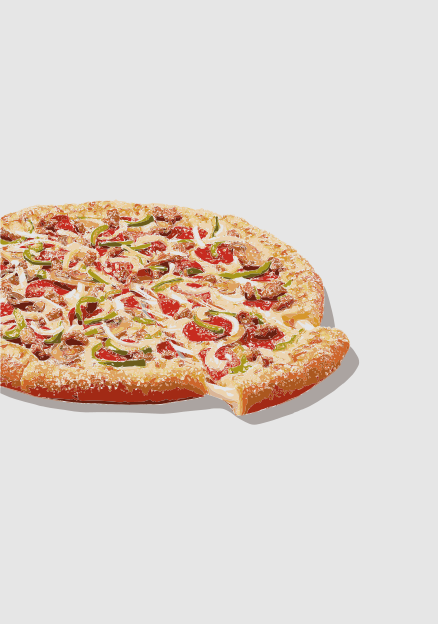

Pizza mexicana
La pizza mexicana es una explosión de sabores inspirada en la cocina tradicional de México. Esta pizza se prepara con una base de salsa de tomate y queso mozzarella, y se cubre con ingredientes típicos como chorizo picante, carne molida sazonada, jalapeños frescos, cebolla morada y pimientos. A menudo se termina con un toque de cilantro fresco y una pizca de orégano, que realzan su sabor auténtico. Cada rebanada ofrece un balance perfecto entre lo picoso y lo especiado, brindando una experiencia vibrante y llena de sabor. Ideal para quienes buscan una pizza con un toque auténticamente mexicano.
$ 180.00
